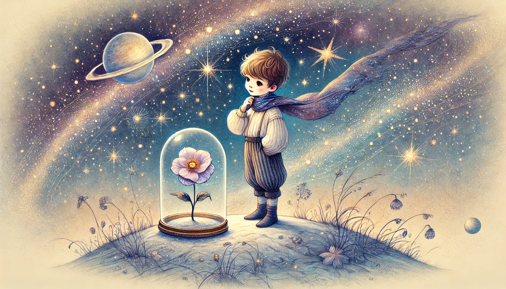

어린왕자
목차
작가
생텍쥐페리
출판일
1943년
감상평에 대한 AI그림
살아가면서 잠시 잊고 있었던 것들을 다시 생각하게 해주고 나를 다시 돌아볼 수 있게 하는 책이다.
어른이 되어 다시 읽으면 어렸을 때 읽고 느낀 것과는 또 다른 느낌을 받을 수 있다.
책을 읽으며 순수함과 동시에 깊은 울림과 교훈을 얻어갈 수 있다.

감상평에 대한 AI평가
✨ 삶의 본질, 감정 변화, 순수함과 교훈이라는 책의 핵심 메시지를 잘 짚었다.
✨ 다소 추상적이며 어떤 장면이나 대사를 통해 어떤 깨달음과 변화를 느꼈는지 구체적인 예시가 필요하다.
✨ 어린 왕자의 대사나 상징성을 철학적이거나 감성적으로 해석하면 더 깊이 있는 감상이 될 것이다.